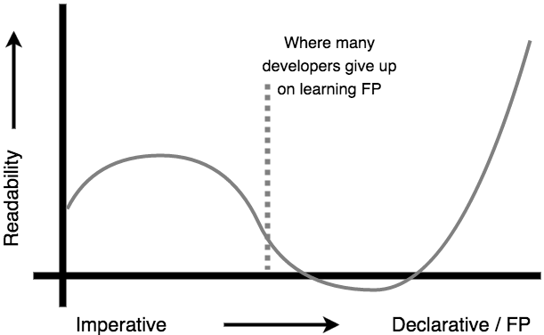

读后感
很久之前，组内分享过函数式编程的相关内容，听完之后的感受就是和没听没什么区别。函数式编程中有许多概念，对于熟悉和见惯面向对象编程的人来说，一时半会不能够消化。而且，就连值和引用、闭包等概念都分不清的人，对JavaScript 函数式编程的入门更是困难重重。《Functional-Light JavaScript》（中文翻译版《JavaScript 轻量级函数式编程》）自称是轻量级的，抛开了概念的讲解，从为什么用，怎么用，最终呈现什么等几个方面带我们重新认识了函数这个基础且重要的概念。
为什么函数式编程
当下有三种编程范式，结构化编程、面向对象编程和函数式编程。虽然函数式编程是近些年才采用的编程范式，但是它的发明却是最早的。函数式编程概念是基于 𝛌 演算的直接衍生物，𝛌 演算法的一个核心思想是不变性。故，理论上讲，在函数式编程语言中应该不存在赋值语句的。
函数式编程的原则可以使得我们写出的代码是可读、可信任的，但这并不代表它是容易理解的。声明式的风格可以让我们知道程序是干什么的，但是要写出这样的程序却不是很容易理解的，起码对于刚接触函数式编程的人来说。
在维护代码的过程中，大部分时间是用来阅读和理解代码。有时候我们需要小心翼翼地阅读每一行代码，生怕某一个不为人知的骚操作会引发了一些列的 bug；有时候也需要在不同函数调用中了解程序的意图。总之，函数式编程的一些原则可以让我们写出可读性高、可验证的代码。当然，即便掌握了函数式编程，也并不意味着你一定得用它。
最好的代码是可读性高的代码，因为它在正确的（理想主义）和必然的（正确的）之间寻求到了恰到好处的平衡。

函数基础
在数学中，函数总是获取一些输入值，然后返回一个输出值，输入值和输出值存在某种关系的映射。在函数式编程中使用的就是数学意义上的函数，接受输入值，明确 return 值。
函数通常是这个模样：
1 | function foo(x, y, z){ |
foo.length 是函数期望的参数个数，通常就是形參个数。但是，并不要求实参和形參的个数相同，在函数内部可以通过 arguments 查看所有入參（箭头函数无此参数）。
使用 ES6 中的解构可以轻松给变量绑定入參的值：
1 | function foo([x, y, ...args]) { |
由以上对比，我们可以看出，声明式代码通常比命令式代码更干净。所以只要有可能，还是尽可能使用声明式和自解释的代码。
有时候函数会根据不同的输入值来重载不同的功能：
1 | function foo(x,y) { |
这种设计虽然暂时很方便，但是对以后的功能添加或修改会带来很大的麻烦。
在上面已经提到函数要有明确的 return 值，如果函数内部改变了外层作用域的变量或引用类型的入參，那么这个函数就有了副作用的，对该函数外的环境造成了污染。我们希望函数是个没有副作用的函数，即纯函数。
1 | function sum(list) { |
函数可以接受并返回任何类型的值，当这种类型的值恰好是函数时，它就叫高阶函数。而真正高阶的用法，就是闭包，它可以记录并且访问作用于外的变量，甚至该函数在不同作用域中被执行。
1 | function runningCounter(start) { |
闭包中保存的变量并不会在函数执行后自动销毁，只要内部函数依然存在对变量的引用，变量就会一直保留。在函数式编程中，闭包是最重要的基础，所以，这个概念一定要理解。
还有的函数是没有名字的，这种函数称之为匿名函数，使用最多的是立即执行表达式：
1 | (function(){ |
命名函数的好处有很多，可以在堆栈中方便调试，可以通过名字引用自身等。但并不是所有的函数都可以命名的，箭头函数可以说是十分简洁，可以使用最简单的符号来表示一个函数。
1 | people.map( person => person.nicknames[0] || person.firstName ); |
箭头函数除了写法简洁之外，还有一个可以称之为好处的便是 this。箭头函数中的 this 是基于作用域的，是可以预测的。而对于普通函数，this 是动态绑定的，是基于调用者的。不管是哪一种 this， 我们还是希望能够显式地表示上下文。
1 | function sum(ctx) { |
函数的输入
在程序中往往将不变的封装起来，变化的隔离开来。很多时候不变的包括一些预设的参数。
首先封装一个请求函数：
1 | // 步骤一： |
对于不同的请求，有不同的 url 或参数：
1 | // 步骤二： |
url 就是预设的参数，而剩余的参数在调用的时候传入。
1 | // 步骤三： |
仔细观察步骤二，代码似乎还可以提炼下：
1 | // 步骤二： |
步骤二的转换就是偏函数的应用，它是通过预设参数的方式来减少入參的数量。如果颠倒入參的顺序，就成了右偏函数。
同样是对函数输入管理的技术，即柯里化，该技术将一个接受多个实参的函数拆解成连续的链式函数，每个链式函数接受单一实参并返回接受下一个实参的函数。
1 | function sum(...args) { |
从以上的代码可以发现，无论是偏函数还是柯里化，都是收齐所有的实参后才执行原函数，也就是说没必要一次性传入所有的参数，而且柯里化这种只接受单一参数的特性在后面的组合函数中也起着很重要的作用。
函数式编程可以说在参数上下了很大的功夫，甚至还有种称之为无形參的风格，其目的就是移除非必要的形參到实参之间的映射。无形參风格是否提高了代码的可读性，有没有必要使用无形參风格，还需要你自己去定夺。
1 | function double(x) { |
组合函数
函数组合，就是把上一个函数的输出值作为下一个函数的输入值，并以此持续下去。
看个例子，将一句话拆分为单词数组：
1 | // 转小写，过虑出单词； |
数据的流向：
1 | wordsUsed <-- unique <-- words <-- text |
但是函数式编程喜欢声明式风格，关注点在是什么而不是怎么做，我们不需要知道具体的实现细节。我们希望是这样的：
1 | // 命令式 |
如何实现函数 compose ？
1 | // 写法一： |
副作用和值的不可变性
const 是用来声明一个常量的，而常量就是不允许被重新赋值的变量。在排查问题的时，我们很少将注意力放在由 const 声明的变量上，毕竟它就是一个无关痛痒的常量。如果最终就是因为这个常量发生了变化，会不会很刺激？！虽然 const 声明的是常量，但是对于引用类型的值，程序还是允许它改变的。因为 const 的不靠谱，我们不得不重新关注由它声明的常量。
1 | const x = [ 2 ]; |
数据的突变引发了一系列意想不到的 bug，究其原因，是变量被共享或有着不同的用处。
1 | var x = 1; |
当变量被共享时（在函数 foo()、bar()、baz() 中，任何一个函数都有可能改变变量 x），最终我们无法确认 x 到底是什么值，为了追踪变量 x 的变化，我们不得不仔细逐个阅读函数 foo()、bar()、baz()。显而易见，这给我们阅读理解代码带来了很大的麻烦。
1 | function sum(list) { |
而对于引用同一对象的不同变量，对象的改变也是同步的，这种改变往往是不易察觉的。所以，对于引用类型的特殊性，需要特别注意的。
归纳一下，什么样的变量被共享时需要额外上心的，外层作用域里的变量和引用类型的变量。
如何避免这种数据突变带来的状态紊乱的？可以想到的是将变量变成只读的或重新拷贝一份以作区别。
1 | var x = Object.freeze( [ 2, 3, [4, 5] ] ); |
我们可以使用 Object.freeze 等 API 将数据转为不可变，但是这种 API 的还是有局限性的，只能浅层限制不可变。要想使得一个深层嵌套的对象不可变，就需要深度遍历对每个属性使用 Object.freeze 等 API。
另一种思路就是拷贝一份数据，这样的话，再怎么折腾副本都不会影响到源数据。
1 | function addValue(arr) { |
在此，我们不由地想起函数式编程的核心 —— 不变性。我们看到了变化的数据给程序造成的可读性差、状态紊乱等坏处，自然我们就想到数据不变性会让程序更加友好。但值的不变性并不意味着值代表的状态不会发生改变，所以就有了值的拷贝。这种不变性是指，当需要改变程序中某个状态时，我们不能改变源数据，而是拷贝跟踪它的副本。拷贝也有深拷贝和浅拷贝，我们需要的是独立于源数据的副本。
1 | function updateLastLogin(user) { |
然而，拷贝也不是没有代价的。突然多出来的副本，多少会影响到性能。我们希望有种方式可以减少内存占用，提高性能。它使得不同变量指向同一个数据源同时有着不同版本的数据，不同版本的数据互不影响，这有点像 git 的版本控制，这样的话，值的不变性这个语义也得以保留。其实已经有一些库实现了类似的优化，如 Immutable.js 等。
如果用两个字总结以上的内容，无疑，就是「干扰」了，这种干扰来自于非预期的数据变化。
作为函数式编程的主角 —— 函数，我们自然也会希望函数内部不会造成数据的突变，一切结果是可预测的，更多的希望它能够符合函数式编程的核心 —— 不变性。也就是说，我们在编码的过程中要减少函数的副作用。
除了以上所说的数据共享，副作用还包括随机性 （Math.random()）、IO 操作、竞态问题等。副作用是多种多样，我们使用纯函数来减少这种副作用。换句话说，与纯函数相违背的，我们基本可以认为是副作用。
什么是纯函数？有说纯函数就是幂等函数，但并不是所有的纯函数都是数学概念上的幂等。
1 | var hist = document.getElementById( "orderHistory" ); |
另一种定义函数的方法是，给定相同的输入（一个或多个），它总是产生相同的输出。
1 | const PI = 3.141592; |
还有一种定义就是，即纯函数具有引用透明性。
引用透明性是指一个函数调用可以被它的输出值所代替，并且整个程序的行为不会改变。换句话说，不可能从程序的执行中分辨出函数调用是被执行的，还是它的返回值是在函数调用的位置上内联的。
1 | function calculateAverage(list) { |
代码的副作用降低了程序的质量，同时也加大了我们对代码的阅读难度。没有副作用的程序是不存在的，我们只是通过重构不纯的函数或封装副作用等方式来避免副作用的产生。
闭包和对象
首先用两段代码来描述同一个东西：
1 | // 闭包方式 |
可以发现闭包和对象就是对同一事物的两种表达方式。
关于闭包和对象有着以下的论调：
- 一个没有闭包的编程语言可以用对象来模拟闭包。
- 一个没有对象的编程语言可以用表报模拟对象。
现在，我们在 JavaScript 中用对象模拟闭包。
1 | function outer() { |
首先要解决 outer() 执行后，x 变量没有被销毁。在创建函数 outer 时，有个对象会保存该作用域下的所有变量:
1 | scopeOfOuter = { |
在创建函数 inner 时，也会生成一个 scopeOfInner 的作用域对象，这个对象的原型指向 scopeOfOuter：
1 | scopeOfInner = {}; |
所以在访问 x 变量时，更像是在访问 scopeOfInner.x，然后沿原型链查找。
以上只是些假设，真实的情况肯定比这复杂。这里只是论证可以使用对象实现闭包，同样我们也可以使用闭包实现对象。
递归
递归可以说是很函数式，它的优点是更具有声明行，简洁易读，但最大的弊端还是内存占用方面。
1 | function foo() { |
每个函数调用都将开辟出一小块称为堆栈帧的内存。堆栈帧中包含了函数语句当前状态的某些重要信息，包括任意变量的值。之所以这样，是因为一个函数暂停去执行另外一个函数，而另外一个函数运行结束后，引擎需要返回到之前暂停时候的状态继续执行。
但是对于递归来说，可能会生成上万的堆栈，最终会导致爆栈。
我们希望内层函数在函数底部调用时，外部函数的堆栈直接弹出。
这种技术叫做尾调用优化。
减少内存的方法还包括后继传递风格（CPS）和 Trampoline 等。
利用CPS变换，把任意递归函数改写成尾调用形式，以 continuation 链的形式，将递归占用的栈空间转移到堆上，避免爆栈的悲剧。（CPS变换可以用来将普通递归转变为尾递归？？）
在缺乏尾调用优化的语言中，并不知晓函数不会返回，状态、参数压栈依旧会发生，因此需要手动强制弹出下一层调用的函数，禁止解释器的压栈行为，这就是所谓的Trampoline。
1 | // 斐波那契 |
吐槽
书中还有其它章节，大部分属于实操，按下不表。对于 JavaScript 函数式编程入门，本书倒是一个不错的选择。不知道是外国人本来就说话啰嗦还是翻译的问题，中文版有些地方读起来不是很顺畅。不过翻译向来是出力不讨好，请原谅我的吐槽，你们都是棒棒的！